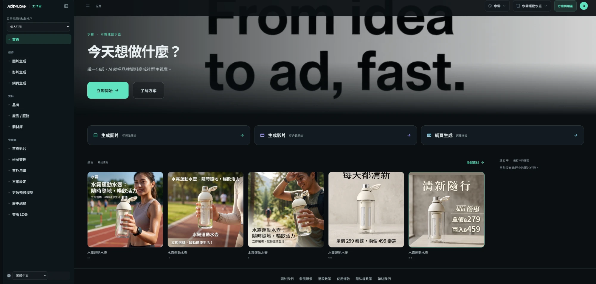

學歷Education
- 2026/09 ～
國立清華大學National Tsing Hua UniversityNOW
科技管理研究所 碩士班。
M.S., Institute of Technology Management.
- 2022/09 ～ 2026/06
逢甲大學Feng Chia University
人工智慧技術與應用學士學位學程。
B.S. Program of Artificial Intelligence and Technology Application.
- 2026/03 ～ 2026/07
上海同濟大學Tongji University, Shanghai
交換學生。
Exchange student.
- 2019/09 ～ 2022/06
高雄市立楠梓高中Nanzih Senior High School, Kaohsiung
體育班（射擊專長）。
Athletic program (sport shooting).
專長Expertise
人工智慧Artificial Intelligence
用大型語言模型（LLM）、語音辨識與機器學習模型，做過新聞輿情監測、情緒判斷與趨勢預測等實際運作的系統。
Built working systems with large language models, speech recognition and machine learning: news monitoring, sentiment classification and trend forecasting.
雲端運算Cloud Computing
在 AWS Training Partner 逢甲大學雲創學院實習兩年，帶過校內外的雲端實作課程，也把線上產品部署到 AWS 並規劃擴展架構。
Interned for two years at Feng Chia University's Cloud Innovation School, an AWS Training Partner, leading hands-on cloud labs, and deployed live products on AWS with a scaling architecture.
專案管理Project Management
在產學專案中擔任專案經理與組長，做過需求訪談、範疇界定與分工排程，也以 Scrum 流程參與國際敏捷聚會的籌辦。
Served as project manager and team lead on industry projects, handling requirement interviews, scoping and scheduling, and helped run an international agile gathering in Scrum sprints.
專案作品Projects

GLOWCRYSTAL SDN. BHD. · 上線產品GLOWCRYSTAL SDN. BHD. · Live productHotMudah AI：AI 生成行銷內容平台HotMudah AI: AI Marketing Content Platform GLOWCRYSTAL SDN. BHD. · 上線產品GLOWCRYSTAL SDN. BHD. · Live productFastarah：專屬行銷 Agent 助理Fastarah: Marketing Agent Assistants
GLOWCRYSTAL SDN. BHD. · 上線產品GLOWCRYSTAL SDN. BHD. · Live productFastarah：專屬行銷 Agent 助理Fastarah: Marketing Agent Assistants 巨鷗跨界智慧創新集團 · 產學合作JU-OU Cross-Border Smart Innovation Group · Industry collaboration輿情正負面及發酵趨勢分析News Sentiment & Trend Forecasting
巨鷗跨界智慧創新集團 · 產學合作JU-OU Cross-Border Smart Innovation Group · Industry collaboration輿情正負面及發酵趨勢分析News Sentiment & Trend Forecasting 天思數位科技股份有限公司 · 產學合作Tensei Digital Technology Co. · Industry collaborationLLM 多模態輿情分析功能開發LLM-Powered Broadcast News Monitoring
天思數位科技股份有限公司 · 產學合作Tensei Digital Technology Co. · Industry collaborationLLM 多模態輿情分析功能開發LLM-Powered Broadcast News Monitoring 緯創資通股份有限公司 · 產學合作Wistron Corporation · Industry collaboration資安威脅情資戰情平台Cyber Threat Intelligence Platform
緯創資通股份有限公司 · 產學合作Wistron Corporation · Industry collaboration資安威脅情資戰情平台Cyber Threat Intelligence Platform Gogoro 出題 · 競賽作品Challenge set by Gogoro · Hackathon entryGogoro Smart Scooter 萬事通Gogoro Smart Scooter Assistant
Gogoro 出題 · 競賽作品Challenge set by Gogoro · Hackathon entryGogoro Smart Scooter 萬事通Gogoro Smart Scooter Assistant 得力文創科技有限公司 · 產學合作Dai-Ly Cultural and Creative Technology Co., Ltd. · Industry collaboration大語言模型輔助學習歷程撰寫系統LLM-Assisted Learning Portfolio Writing System
得力文創科技有限公司 · 產學合作Dai-Ly Cultural and Creative Technology Co., Ltd. · Industry collaboration大語言模型輔助學習歷程撰寫系統LLM-Assisted Learning Portfolio Writing System